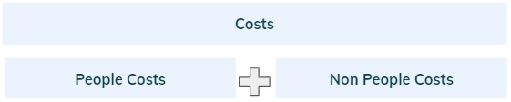
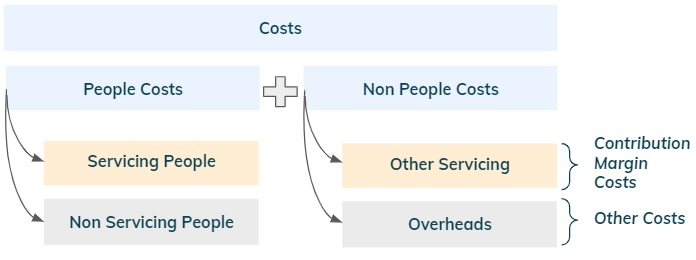
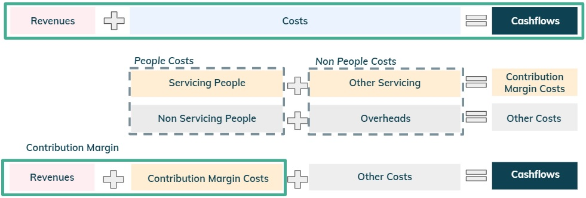
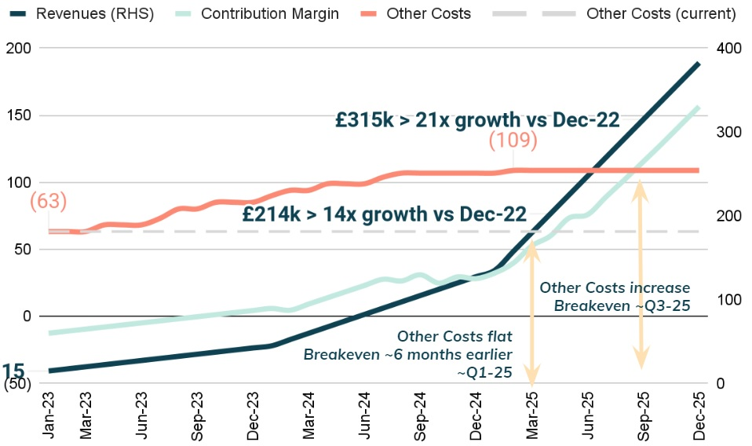
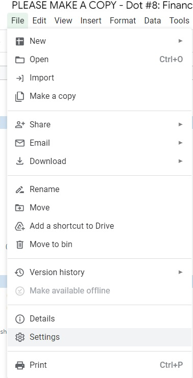
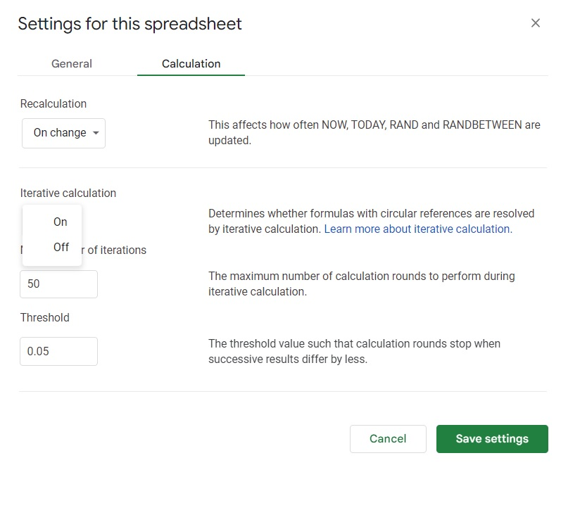
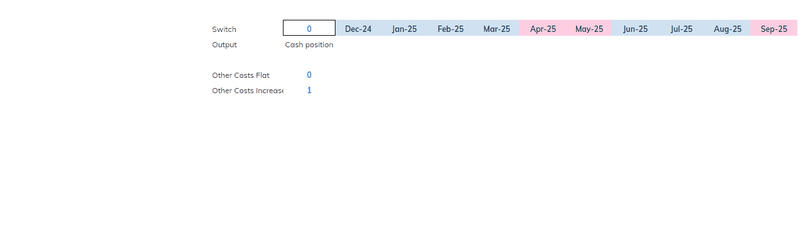
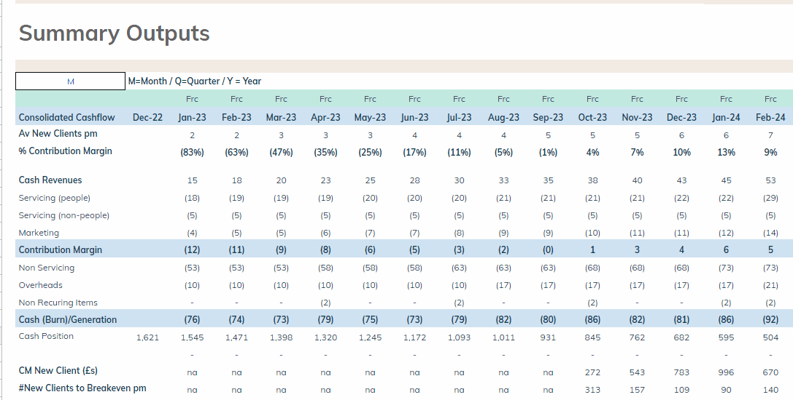
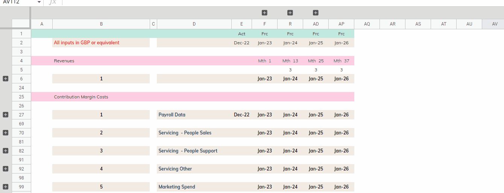

Summary
In a nutshell, Financial Planning should be used to support thoughtful discussions
with people across a business, to steer a company towards a
destination aligned with its vision (see note
Turn the Wheel),
with as few numbers as possible.
It then entails working backwards, thinking about what will break
along the way and fixing it ahead of time to ensure the business can
grow with minimal constraints.
Two Key Buckets
I find it very helpful to distil Finance into two key buckets.
Bucket #1 (“Day to day”): this was covered in the last two notes and is all backward looking.
The most senior finance person should ideally spend 30% (or less) of their time on this bit and
should be responsible for building a high performing finance team that delivers operationally
what is required to run a business on a day to day basis.
Bucket #2 (“Steering the ship”): the remaining ~70% (and the focus of this note)
relates to partnering (see #1 below) with people across a business to grow it sustainably.
It is all about using the past to think about the future (see #2), translating a vision into
numbers for a sustainable business (see #3), setting up milestones over the years (see #4) and
determine how much capital is required (see #5).
#1: Engage with people in a thoughtful discussion
I have a build model (see
here) to backup all these numbers that will be
discussed in this note, however you will notice that there will be no discussions
around a complex spreadsheet. This was intentional. Financial Planning should be used to
support founders/leadership to understand the current trajectory and to make decisions to steer
the business towards certain milestones (e.g. grow 3x next year) and their vision.
Therefore, even though there will be a lot of details behind, when engaging in a discussion with
this group of people, there should be as few numbers as possible.
Ideally, the model should be dynamic enough to allow for live discussions of the impact
of different assumptions, to facilitate better decisions in real time.
#2: Set up a proper reporting structure
It is really important to ensure that the structure of the financial reporting is set up in a way that helps to build a business plan to think about the future. This starts by splitting Costs into two main buckets: People Costs and Non People Costs.
 Figure 2: People and Non People Costs.The next step entails further splitting each of these two buckets into Contribution Margin Costs (see previous note Dot #1) and Other Costs. The word “servicing” relates to any costs directly linked to revenues (contribution margin), which can include people like sales and client support and other non people costs such as marketing.
 Figure 3: Contribution Margin Costs and Other Costs.Finally, the financial reporting is structured as follows:
 Figure 4: Contribution Margin + Other Costs = Cashflows.With this structure in place, it is easier to drill down on the operational drivers for CM unit economics and link a financial goal (e.g. CM > Other Costs) with operational milestones (e.g. grow revenues ~20x in 3 years or decide on the hiring plan).
#3: Make sure the business is sustainable before scaling it
It is of paramount importance to ensure that unit economics makes
sense before actually scaling the business (see previous note
Digging out of a hole).
Lets thus drill down on the drivers for the Contribution Margin -
these will vary depending on the business model and product, hence
we are going to analyse a simple business as per the example below.
To determine if the business is sustainable before scaling it,
is it necessary to establish if the current CM loss of (83%) is temporary or
structural (always negative).
In this case, there is a path to get to a run-rate contribution margin of ~40%
if servicing costs capacity is fully utilised (~25 new clients per month).
Few comments below:
- Each month the company needs to acquire new customers to generate revenues. Current performance is 2 new clients per month (“pm”).
- Average revenue per new client is c. £7.5k.
- There are currently two sales people with a base salary of £60k and average sales performance (post ramp-up period) is 6 new clients pm.
- Commission is 10% of revenues generated (~12% grossed up for taxes).
- The company currently has one person supporting new clients with a base salary of £50k. This person can support up to 25 new clients per month.
- Other servicing costs of £5k stay fixed for up to 25 new clients per month.
- There are further marketing costs of £2k to acquire each new client.
#4: Figure out the growth required to become profitable
The run-rate contribution margin of ~40% can only be achieved if servicing
costs capacity is fully utilised.
During the growth stage, it will not be possible to have a perfect match
between revenues and CM costs. This is because it will be necessary to incur additional
costs beforehand (e.g. hire more servicing people) which will drive margins below the
run-rate level. Furthermore, for a young startup (series A to C) it is very unlikely
that Other Costs remain flat, during high growth periods.
Let’s continue to analyse the previous example - see figure below.
The company currently has Other Costs of ~(£65k) and Revenues per month of £15k (2 new clients @ £7.5k fee). If we take a haircut on the run-rate CM % and assume 33% and if there is no increase in Other Costs, it would be necessary to hit each month c. ~£200k of revenues (grow c. 13x) to achieve breakeven.
In practice however, Other costs will grow. If we assume this figure to increase to ~(£110k), revenues would need to grow to ~£330k (~22x) which would take a bit less than 3 years to achieve (~3x each year). The figure below shows a chart with some key outputs for the business based on the financial model:
 Figure 8: Summary model outputs- Revenues triple every 12 months.
- Other Costs increase to (£109k) as more non servicing people are hired.
- Revenues need to grow ~£315k (~20x) over the course of almost 3 years for the business to breakeven (i.e. Contribution Margin > Other Costs) in ~Q3-25.
Notice that if Other Costs had remained flat, breakeven would have occurred ~6 months earlier when revenues hit ~£215k (~15x). Even more importantly, this would have allowed the company to not run out of cash (see #5 below).
#5: Determine your funding needs and sources
When would the company need to raise?
Would it have access to other sources of funding (e.g. venture debt) in addition to equity?
As it can be seen in the figure below, for the Other Cost flat scenario (green curve),
the Dec-22 cash position of £1.6m would have allowed the business to be funded until breakeven.
This is not the case when Other Costs increase. There would be a ~£0.7m
funding gap that would have to be financed by Q3-24.
It is thus important to be focused on topline growth and sustainable CM, while carefully managing Other Costs, to ensure either (i) enough runway to show traction ahead of the next raise or (ii) manage the business to breakeven in order to minimise/avoid future raises.
If you require support or have any questions my contact is: 
Appendix - Saving Different Scenarios
In any discussion, there will most likely be the need to discuss different scenarios and it is very helpful to be able to compare key outputs. This is possible to achieve by making the model circular as follows. (see tab “ExampleIterations” in the financial model). Step 1 - Go to File > Settings
 Figure 10: Step 1 - Settings.Step 2 - Go to the calculation tab and turn on iterative calculations
 Figure 11: Step 2 - Iterative calculations.Step 3 - Build a switch for the scenarios and save the data using circularity
 Figure 12: Step 3 - Saving data for each scenario.Appendix - Model Outputs
Below are the model outputs on a quarterly and annual basis.
 Figure 13: Summary model outputs.Appendix - Input Tab
Below are the input tab assumptions which are driving everything in the model.
 Figure 14: Input tab for the model.